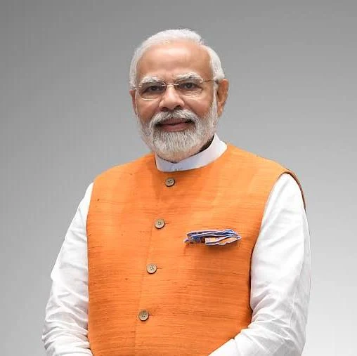

Narendra Damodardas Modi

Narendra Damodardas Modi (born 17 September 1950) in vadnagar and is an Indian politician who has served as the prime minister of India since 2014. Modi was the chief minister of Gujarat from 2001 to 2014 and is the member of parliament (MP) for Varanasi. He is a member of the Bharatiya Janata Party (BJP) and of the Rashtriya Swayamsevak Sangh (RSS), a right-wing Hindutva paramilitary volunteer organisation.
Education
Indian Prime Minister Narendra Modi holds a Bachelor of Arts degree from the University of Delhi and a Master of Arts degree from Gujarat University, both earned via distance learning. However, the authenticity of these degrees has been the subject of an ongoing political controversy.
Educational details:
Bachelor of Arts (1978):
Modi completed a B.A. in Political Science through the School of Open Learning at the University of Delhi.
Master of Arts (1983):
He obtained an M.A. in Political Science from Gujarat University, also as an external student.
Party
Bharatiya Janata Party As of October 2025, Narendra Modi is the Prime Minister of India and serves as the leader of the Bharatiya Janata Party (BJP) parliamentary party, holding significant power and influence within the party. He has been a pivotal figure in the BJP for decades, initially as an organizer and now as the face of the party's national success.
Current role and activities in October 2025
Prime Minister of India: Modi is serving his third term as Prime Minister, a position he first attained in 2014 by leading the BJP to a historic majority.
Star Campaigner:
The BJP listed Modi as one of its top 40 star campaigners for the Bihar assembly elections, which are scheduled for November 2025. This highlights his continued role as the party's main draw for voters.
Outreach Efforts:
In October 2025, Modi invited BJP workers from Bihar to participate in the "Mera Booth Sabse Majboot" campaign, an interactive outreach program to strengthen the party at the grassroots level.
Public Engagements:
His schedule for October 2025 includes public engagements, such as a visit to Andhra Pradesh and an upcoming "Mann Ki Baat" address, reflecting his ongoing public-facing duties.
Parliamentary Leader:
He remains the unanimously elected Leader of the BJP Parliamentary Party.
Historical ascent within the party
Early Organizer (1987–1995):
Modi began his career as an organizer for the Rashtriya Swayamsevak Sangh (RSS) before joining the BJP in 1987. He quickly rose to become the General Secretary of the Gujarat branch, where he was credited with strengthening the party's presence in the state.
National General Secretary (1995–2001):
He was promoted to the national stage in 1995, serving as the BJP's national secretary and later as general secretary. He played a key role in the party's success in the 1998 Lok Sabha elections.
Chief Minister of Gujarat (2001–2014):
In 2001, Modi was appointed Chief Minister of Gujarat.During his 13-year tenure, he led the BJP to three consecutive assembly wins.
National Resurgence (2014):
Modi was chosen to lead the BJP's campaign for the 2014 general election. His leadership resulted in a landslide victory, giving the BJP its first single-party parliamentary majority.
Re-elections:
He repeated this success by leading the party to an even larger majority in 2019. In 2024,the BJP secured a third term for him in a coalition government.
Impact on the BJP
Electoral Dominance:
Under Modi's leadership, the BJP has grown exponentially, winning numerous state and national elections and expanding its influence across India.
Cult of Personality:
Modi has developed a strong personal brand and a direct connection with voters, which the BJP has effectively
utilized in election campaigns.
Strategic Direction:
He has driven the party's strategic direction, emphasizing a pro-development, nationalist agenda inspired by his own vision.
Grassroots Outreach:
Campaigns like "Mera Booth Sabse Majboot" showcase his focus on strengthening the party's organization from the ground up, a strategy stemming from his own background as an organizer.
Awards
Indian Prime Minister Narendra Modi has received numerous international awards and honors from various countries and organizations. Since assuming office in 2014, he has been recognized for his contributions to diplomacy, economic growth, and environmental initiatives, among other efforts. As of mid-2025, he has received over two dozen civilian honors from foreign nations.
Recent awards in 2024 and 2025
Officer of the Order of the Star of Ghana (2025):
Awarded Ghana's national honor for his distinguished statesmanship and global leadership.
Order of the Most Ancient Welwitschia Mirabilis (2025):
Namibia conferred its highest civilian award on Modi for strengthening bilateral ties.
Order of the Republic of Trinidad and Tobago (2025):
He became the first foreign leader to receive the Caribbean nation's highest civilian honor.
Grand Cross of the Order of Makarios III (2025):
Cyprus's highest civilian honor was presented to Modi for deepening ties with India.
Grand Commander of the Order of the Star and Key of the Indian Ocean (2025):
Mauritius conferred its highest civilian honor during the country's 57th National Day celebration.
Order of Mubarak Al-Kabeer (2024):
Kuwait's highest honor was given to Modi in December 2024.
Grand Commander of the Order of the Niger (2024):
Awarded Nigeria's national honor for strengthening relations between India and Nigeria.
Order of St. Andrew the Apostle (2024):
Russia's highest civilian award was conferred upon Modi for his efforts to enhance India-Russia relations.
Order of the Druk Gyalpo (2024):
He became the first foreign head of government to receive Bhutan's highest civilian award.
Other notable international awards
Grand Cross of the Legion of Honour (2023):
France's highest distinction in military or civilian orders.
Order of the Nile (2023):
Egypt's highest state honor.
Companion of the Order of Fiji (2023):
Fiji's highest honor.
Companion of the Order of Logohu (2023):
The highest civilian award of Papua New Guinea, with recipients titled "Chief".
Legion of Merit (2020):
The highest degree of this U.S. Armed Forces award was presented by President Donald Trump.
Order of Zayed (2019):
The highest civilian honor of the United Arab Emirates.
Champions of the Earth Award (2018):
The United Nations' highest environmental honor, recognized for his work on "Beat Plastic Pollution".
Seoul Peace Prize (2018):
Awarded for his contributions to international cooperation and fostering global economic growth.
Grand Collar of the State of Palestine (2018):
The highest civilian honor of Palestine awarded to foreign dignitaries.
Amir Amanullah Khan Award (2016):
The highest civilian honor of Afghanistan.
Order of Abdulaziz Al Saud (2016):
The highest civilian honor of Saudi Arabia for non-Muslim dignitaries.
Table of Contents: